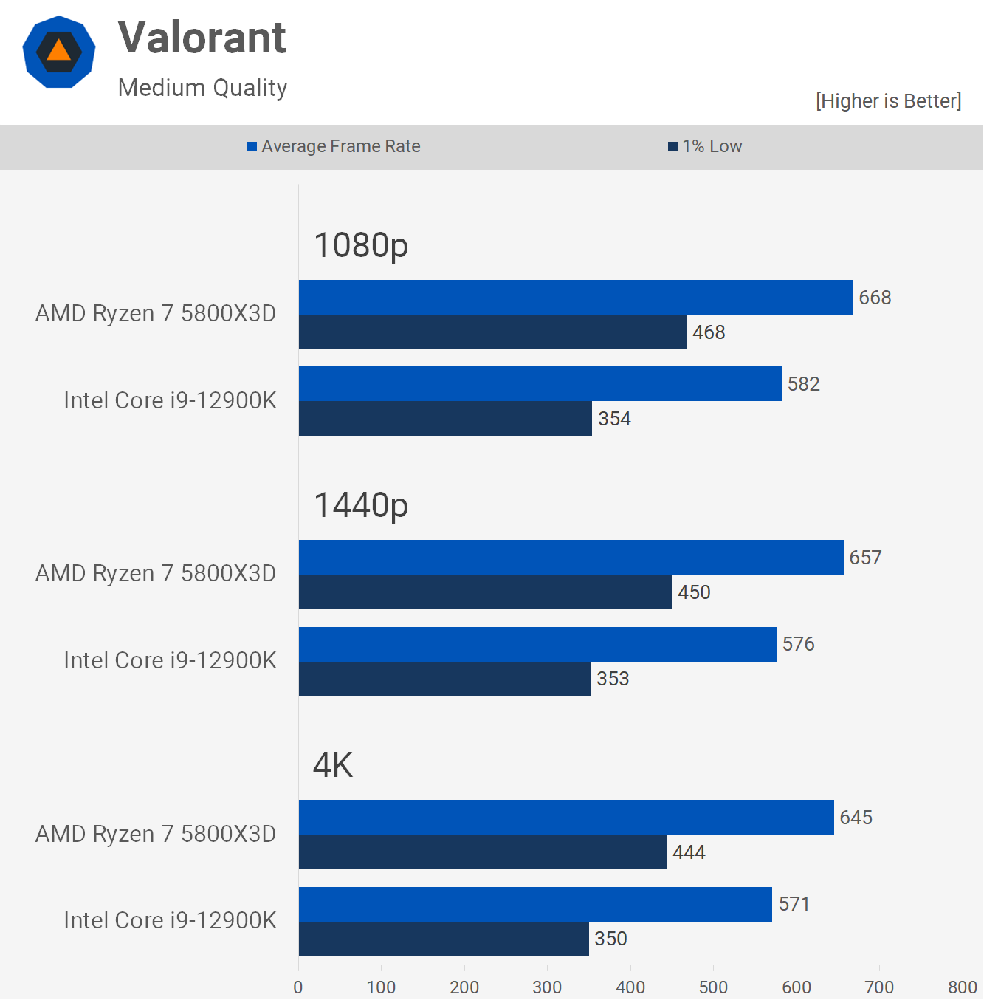

RYZEN 7 5800X3D: Conheça o CPU queridinho dos gamers e onde encontrar as melhores ofertas.

O AMD Ryzen 7 5800X3D é um processador de alto desempenho da arquitetura Zen3 da AMD. Ele é o primeiro processador para desktop que possui cache L3 empilhado, proporcionando 96MB incomparáveis de cache L3 emparelhado com núcleos ultra rápidos. Este modelo funciona de maneira excelente para jogadores competitivos que precisam do máximo de FPSs possíveis!
ESPECIFICAÇÕES:
Aqui estão alguns testes em jogos feitos pelo TECH_SPOT desse CPU vs o CORE I9

O Ryzen 7 5800x3d Foi lançado no dia 20/04/2022 custando 450 dólares, enquanto o CORE I9 12900K; por 600 dólares, ou seja, mais performace custando 150 dólares mais barato!
Em 2023,no Brasil, os preços deram uma queda: o Core I9 12900K pode ser encontrado na faxa dos R$3000,00 ou mais enquanto o Ryzen 7 5800x3d está em promoção na faxa de R$2000,00 ou menos.
Se você já é um usuário da plataforma AM4, você pode encontrar o seu próximo upgrade,o Ryzen 7 5800x3d, por R$1988,99 na: